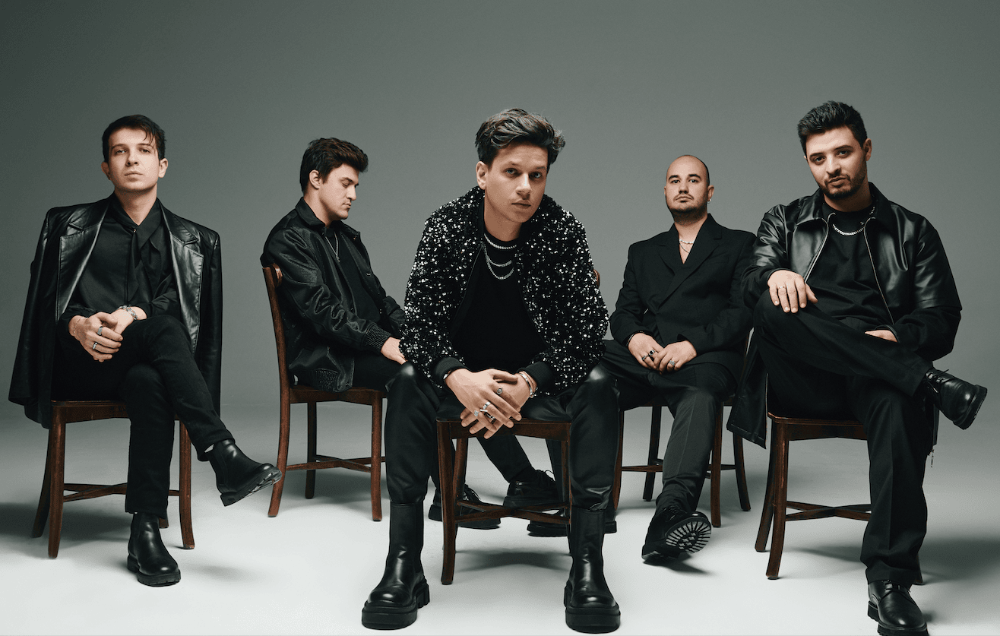

Madrigal ya da ilk adıyla Mavera, 2007 yılında Ceyhun Kaan Karakaş, Salim Kaan Alıcı ve Emre Zeytinci tarafından Kocaeli, Türkiye'de kurulmuş bir alternatif rock grubudur.[1] Günümüzde vokal ve gitarda Anıl Erdem Cevizci, bas gitarda Kaan Alıcı, bateri ve geri vokalde Sanlı Akgün, klavye ve geri vokalde Burak Emir Kamacı, elektro gitarda ise Ceyhun Kaan Karakaş'ın bulunur.[2] İlk albümleri Neogazion 9 Nisan 2021'de yayımlanmııştır.
